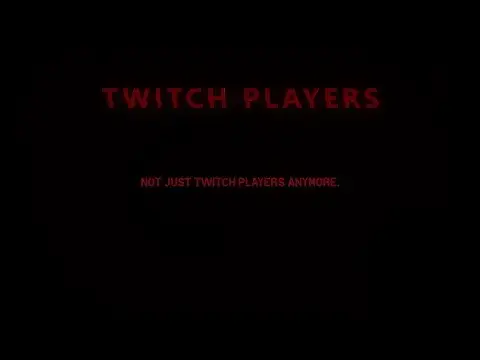
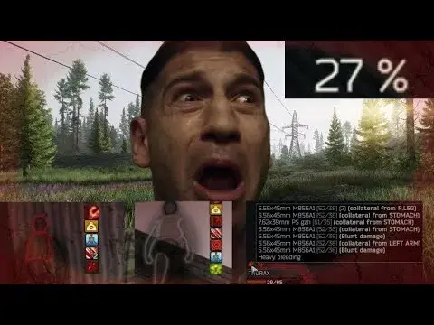

![[SAIN] Twitch Players thumbnail](../../../assets/58f61e34454cbbec7cad1e3bc4889e02e0a37fe752a7618559e289a7a9f58493.webp)
[SAIN] Twitch Players
- Downloads
- 29,500
- Favourites
- 21
- Mod lists
- 49
You WILL die.
Does exactly what you’re thinking. Adds PMCs and PSCAVs with the names of Twitch streamers into your raids with significantly harder AI overall.
Main differences between Death Wish Preset
- SCAVs are as close as possible to live behavior, they no longer kill PMCs at the start of the raid, leaving your raid empty.
- Generally much harder PMCs, including Bosses and Rogues/Raiders.
- No constant head-eyes for both side of Project Fika and SPT players. AI always (mostly, but still will hit your head) aims center mass, and if you have no issues, you can turn off “Always Aim Center Mass” inside Global Settings - all head aim chances are pre-configured for this scenario.
- Per-Map configurations for Labs/Factory/Lighthouse due sizes of the map
- Personality-Focused Progression - early wipe you won’t be able to meet hard PMCs or tell much difference, the game will be going just fine like with any other preset. Preset reaches full potential at PMC Level 30-40 due Personalities being locked behind much higher level requirement for AI.
- Twitch Players - AI PMCs with TTV/TV/YT or any other streaming platform inside their name will cause real trouble for you. They use reserved SAIN Personality made specifically for them to be able to act way faster. Their reaction time (based from tests) can range from ~100 to ~200ms (slightly less than average human being). Goons, and some bosses like Killa also inherit that personality by default.
Enjoy.
Disclaimer: Some of the settings won’t correspond to what you’re actually seeing in the game if you use Fika Project/Headless. Some might experience instant head-eyes, some won’t. I have no fix for this. This Preset is heavily FPS dependent. The worse performance you get (looking at you, Headless Client hosters), the worse is your experience. This Mod&Preset is not made for everyone. You perfectly know what you’re subscribing for by installing this mod. Or about to.. Find out.


Drag and drop 7z contents in your root directory of SPT game.
Version
3.0.8
Twitch Players - Rebalanced
- Now uses SAIN server mod config service for its personalities and custom names assignment
- Now properly handles flag from Bot Callsigns and removes it
Preset Changes
- Global difficulty values are now mostly default, now only bot types/personalities will have a major effect on bots
- Disabled all talking, with a small chance they’ll still sneak in a couple of shouts, but not as much as before
- Nerfed SCAVs by a lot
- Disabled aiming for head for impossible bot types (scavs on impossible will always aim center mass)
- Disabled global center mass aiming
- Disabled grenades in AIvsAI scenarios to eliminate chances of them killing themselves with the grenades somewhere on the map in a forgotten place
- Enabled aim center mass aiming with height value changed - for those who have no issues with bots aimbotting your head, feel free to disable it back
- Increased convergence boost
- Enabled aiming for head for all bot types back so you don’t have to manually edit all bot types and now just use global center mass aiming option
- Disabled random sway for bots
- Slightly tuned down smoothing for bots when in combat/aiming
- Disabled rushing for some personalities
- Gigachads and chads now jump shot you
Dependencies
Version
3.0.7
Back, now even more deadly.
- Black Division is now the deadliest faction out of all
- Global precision values has been increased
- Minimized min aiming times and increased CQB reaction distances
- Updated TTV names to match with the latest Bot Callsigns version
Dependencies
Version
3.0.6
v3.0.6
- Added Black Division and Santa Claus Bot files into Bot Settings.
- Enabled aiming for head for the following bots - Killa, Black Division, Shturman, Goons, Raider, Rogue.
- Updated Wreckless personality tooltip.
- Significantly decreased global maximum aiming time for USEC, BEAR, and Goons.
- Significantly increased global settings for accuracy and precision.
Dependencies
Version
3.0.5
- Updated SAIN preset structure to latest
- Small precision adjustments
Dependencies
Version
3.0.4
Note to all of the Fika users - if you use Headless Client, with a very high chance (around ~95%) most of your deaths will be head-eyes. There is no known to me fix for this.
Changes
- Disabled Coward, Timmy personalities
- Lowered global aggression
- Global aim time was reduced
- Lowered audible ranges for subsonic rounds and silenced weapons
- Set low chance to aim for head back only for PMCs.
- Disabled aim for center mass (globally)
- Reduced scatter multiplier down to the bottom when player is running, or moving in general.
- All bots will toggle their flashlight off or on when needed.
Dependencies
Version
3.0.3
Latest SAIN Compatibility Update
- Updated SAIN Preset structure to match the latest version.
- Reduced chance of responses for non-friendly bots.
- Increased Accuracy and Precision global values.
- Updated Boss personalities to only have Chad/Gigachad/Wreckless/SnappingTurtle assigned.
- Updated BaseSAINDifficulty inside preset to match the “deathwish” SAIN difficulty.
Dependencies
Version
3.0.2
- Due to mass
skill issuehead-eyes, I’ve come to decision to disable any intentional aiming for head SAIN features provides. - Increased Accuracy Speed
Dependencies
Version
3.0.1
- Fixed all bot types having incredibly high aim for head chances
- SCAVs should now react/aim way slower
Dependencies
Version
3.0.0
They’re back.
- Initial update to SPT 4.0
- Uses Bot Callsigns 2.0.1
- Preset update to SAIN 4.2.0
- Most of the functionality except base nickname personalities update was removed. I’m learning I swear x)
Have fun.
Dependencies
Version
2.0.5
- Nerfed general accuracy speed and aggression.
- Debuffed Normal, Rat, Coward personalities in terms of hearing, accuracy speed and aggression due to overwhelmingly high skill ceiling.
- Now USEC/BEAR react as fast as they can be in CQB.
- Scavs no longer can aim for head except Impossible difficulties.
Version
2.0.4
- Bumped Accuracy Speed due to its incorrect setting. (sorry)
- Bumped Precision Speed.
- Even’d out Bot Settings for various bot types - Raiders, Goons, Reshala Guard, Partisan, BEAR and USEC.
- Impossible bots can throw nades while running.
Have fun.
Version
2.0.3
SPT 3.11 | SAIN 4.1.3
- Bots should turn to their target faster now.
- Changed personalities inside configuration file to only “Wreckless” and “SnappingTurtle”.
- Toggled SAIN extract behavior.
- Disabled AI vs AI limitations.
- Small tweaks for BEAR bot settings along with global difficulty.
Version
2.0.2
SPT 3.11 | SAIN 4.1.3
- Lowered headshot percent for most bots. Disabled “Aim for Head” for easy difficulty SCAVs (hard/impossible still have it on)
- Debuffed Normal, Rat, Coward, Timmy personalities due to default values set
- Fixed wrong value of Accuracy Speed set for Wreckless personality
Version
2.0.1
SPT 3.11 | SAIN 4.1.3
- Updated SAIN preset Structure & EFT Bot Settings to the latest
- Removed unused variable from mod
- Disabled Aim For Center Mass
Version
2.0.0
SPT 3.11 | SAIN 4.1.1/4.1.2 (Latest)
- Small clean-up of the mod/config and unused code.
- Removed Progressive Difficulty. Now progression is tied to personalities.
- Re-based preset entirely from scratch due to significant changes.
- Fixed reserved personalities being assigned by power level.
Version
1.9.4
SPT 3.11 | SAIN 4.0.4 | Alpha | Progressive Difficulty Disabled
Technical update including finishing preset changes.
- Fixed mod swearing at BotCallsigns missing config.
- Now using config for extra names (if exist).
- Updated all names in the files to the latest from BotCallsigns mod due to mod not picking up name changes.
- Added forceMainFileRewrite in config - will always scan and rewrite names on every server start.
- Forced personality “Wreckless” for “Legion” Boss.
Preset
- Glukhar has been fairly buffed, along with his guards as well as other bosses.
- Turned down turn smoothing to 0.001 when in combat.
- Global precision speed, accuracy speed were buffed.
- Personality levels (chance to be assigned by PMC level) were slightly changed. Less chads on low levels, more on high levels. Twitch Players do not count into this, they can appear any time.
Here’s a small, but surely, a nice showcase how it feels playing:
https://www.youtube.com/watch?v=88Cu_DiZ9YY
Version
1.9.3
SPT 3.11 | SAIN 4.0.4 | Alpha | Progressive Difficulty Disabled
- Mirrored values of precision speed for global difficulties and personalities due to their incorrect display (Thanks anOrangeDoggo!)
- Bumped accuracy speed
That’s all. Have fun.
Version
1.9.2
SPT 3.11 | SAIN 4.0.4 | Alpha | Progressive Difficulty Disabled
- Reduced smooth turning which was resulting in bots emptying their mags and miss in CQB if you strafed/sprinted to the side to 0.01, nullifying chances of being missed in plain sight. That doesn’t guarantee bots 100% accuracy. (Thanks Janky!)
- Debuffed SCAVs vision speed, gain sight and accuracy coefficients further to compensate smooth turning change.
- Reduced global recoil scaling.
- Bots react faster if you’re moving/sprinting.
- Bots no longer can be suppressed.
- Further work on personalities - global setting adjustments, less PMC talking, improvements on reserved personalities, along with debuffing Normal personality.
Version
1.9.1
SPT 3.11 | SAIN 4.0.4 | Alpha | Progressive Difficulty Disabled
- Changed default personalities for Big Pipe, Knight to Wreckless (Reserved Twitch Players Personality).
- Bumped global accuracy speed and precision times.
- Debuffed bot suppression for certain personalities.
- Headshot chance was changed to 18% (15% -> 18%).
- Aim down sights time reduced by 85% (100% -> 15%).
- Bot names containing ‘chad’ are now considered Twitch Players - changes will be applied on the server start.
Version
1.9.0
SPT 3.11 | SAIN 4.0.2
This is alpha version. Progressive difficulty is disabled, custom SAIN preset is capped to its original difficulty. Use this version only for SAIN labeled at the top.
Changes:
- Adjusted difficulties per bot types (i.e Rogues, Raiders/Bosses), making them more deadlier.
- Adjusted global difficulties to accustom to the latest default presets.
- Wreckless personality is now reserved for Twitch Players only.
- Adjusted SCAV difficulties, making them.. Less deadly, but still able to give you a lot of problems.
- Minor config changes to use Wreckless personality more than others
- Other minor changes relating accuracy, recoil, scatter and aim speed.
Version
1.8.2
SPT 3.11
After hours of testing and playthroughs, some global difficulty settings and tier settings were redone to accustom 3.11 AI difficulties**.**
Changes:
- Bots no longer see you through entire map i.e on Labs, Factory or any other map.
This includes:
- Bots no longer pushing you from all over the map i.e Rogues on Labs swarming your place, unless you’ve made too much noise.
- Bots no longer know where you’re at if you silent walk and re-position.
- Lowered aggression multipliers, hearing distance multiplier and vision distance multipliers for everyone (per-personality settings remained unchanged, so overall difficulty will be as hard as it was).
Version
1.8.1
SPT 3.11
This update includes cumulative fixes and improvements to SAIN Preset based on user feedback.
Mod
- Nerfed hearing distance coefficient for Progressive Difficulty tiers 3-6. (Old 1.2->1.8 to New 1.1->1.5)
- Next Names were added to names shipped with pre-set personalities on server start:
DrakiaXYZ
RaiRaiTheRaichu
Refringe
Chomp
100KmhAMXPeek
CWX
waffle.lord
Amands2Mello
Jehree
SAIN Preset
- Reduced headshot chance from 30% to 10%.
- Chad, GigaChad can now jump corners too.
- Wreckless has more chance to jump corners. (50% ->80%).
- Reduced accuracy multiplier for optics in close range (0.8 -> 0.5).
- Reduced distance that counts as close range for optics. (75 meters -> 35 meters).
Please direct any issues towards GitHub Issues Page. Good Luck with raids!
Version
1.8.0
SPT 3.11
- Updated mod dependencies - SAIN 2.3.0->3.3.0 (Latest), Bot Callsigns 1.4.4->1.5.2 (Latest)
- Major mod revamp has been done to optimize its work and performance on Server start
- Updated SAIN Preset Structure to the latest
- liveMode has been removed and mod automatically detects names to use from Bot Callsigns
- Fixed copyFolder() failing on server start
- Fixed pushNewestUpdateToSAIN() not reading personalities file